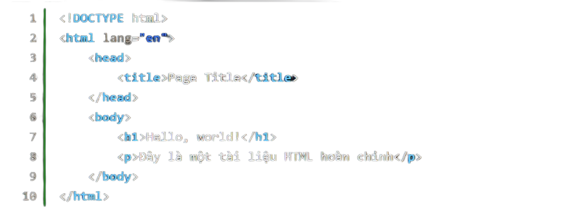

Bài 2: Các khái niệm thường gặp trong HTML
Ở bài trước, chúng ta đã tìm hiểu được HTML là gì và nó có vai trò như thế nào trong lập trình web. Ở bài này, chúng ta sẽ cùng nhau đi tìm hiểu một số khái niệm hay gặp trong HTML, để trong các bài viết sau này của mình bạn sẽ dễ hiểu hơn.
HTML document tức là tài liệu HTML (đôi khi mình gọi là tệp tin HTML) là một tập tin có phần mở rộng là .html, hoặc .htm với nội dung được xây dựng từ các thành phần của HTML.
Mỗi một tài liệu HTML hoàn chỉnh thường đại diện cho một trang web. Bạn có thể xem ví dụ về một tài liệu HTML hoàn chỉnh ở ví dụ dưới đây:
Một tài liệu HTML cần tuân theo một cấu trúc nhất định, cụ thể như thế nào thì mình sẽ gửi tới bạn ở bài viết tiếp theo.
Nhìn lại ví dụ về tài liệu HTML ở trên, bạn sẽ thấy có một cấu trúc chung được sử dụng khá nhiều đó là:
<tagname>Có cái gì đó ở giữa</tagname>
Ví dụ như <title>Page Title</title> <h1>Hello, world!</h1> dụ như <title>Page Title</title> <h1>Hello, world!</h1> chẳng hạn, nó đều tuân theo cấu trúc mà mình chỉ ra ở trên. Thì mỗi một cái <tagname> hoặc </tagname> như vậy thì được gọi là một thẻ HTML (hay HTML tag). chẳng hạn, nó đều tuân theo cấu trúc mà mình chỉ ra ở trên. Thì mỗi một cái <tagname> hoặc </tagname> như vậy thì được gọi là một thẻ HTML (hay HTML tag).
Thẻ trong HTML chia ra làm 2 loại thẻ:
Có một số thẻ HTML không có thẻ đóng, nó chỉ sử dụng để đánh dấu cho một phần tử nhất định, ví dụ thẻ <br> để đánh dấu một phần tử xuống dòng, thẻ <hr> dùng để đánh dấu một đường kẻ ngang màn hình.
Mỗi một thẻ HTML thì có nhiệm vụ đánh dấu cho một loại phần tử trên trang web. Ví dụ:
Thẻ trong HTML khá đa dạng, có tất cả tới mấy trăm thẻ lận, với mỗi thẻ lại đánh dấu cho một loại phần tử khác nhau. Tuy nhiên chỉ có đâu đó khoảng 20 chục thẻ là thường xuyên sử dụng, số còn lại chỉ để tham khảo thêm.
Đối với các thẻ HTML phổ biến, mình cũng sẽ có bài viết trình bày cụ thể với bạn sau.
HTML attribute (thuộc tính HTML) là những tùy chỉnh đối với các thẻ trong HTML.
Ví dụ mình có thẻ <font> được sử dụng khi bạn muốn định dạng lại font chữ trên trang web, và nó có một thuộc tính là color được sử dụng để định dạng màu sắc cho văn bản của bạn.
1|<font color="red">Dòng chữ này sẽ có màu đỏ</font>
Nhưng cái tương tự như color nằm trong thẻ font trên thì được gọi là thuộc tính HTML (HTML attribute).
Phát biểu một cách tổng quát, thì thuộc tính HTML sẽ luôn nằm trong các thẻ HTML mở, và có dạng như:
1 | <tagname attribute1="..." attribute2="...">....</tagname>
Lưu ý: Thẻ HTML và thuộc tính HTML có mối quan hệ mật thiết với nhau. Một số thuộc tính có thể sử dụng cho rất nhiều thẻ, nhưng cũng có những thuộc tính chỉ dành cho một số thẻ nhất định. Có những thuộc tính là bắt buộc phải có đối với một số thẻ, nhưng cũng có thể là tùy chọn (có hoặc không) đối với một số thẻ.
Ví dụ
HTML element (phần tử HTML) là bao gồm tất cả những gì tử thẻ HTML mở cho tới thẻ HTML đóng. Ví dụ dưới đây là một phần tử HTML:
1|<p>Đây là một phần tử HTML, bao gồm cả thẻ mở và thẻ đóng nhé</p>
Đối với các thẻ HTML không có thẻ đóng, như thẻ <br>, <hr> thì chúng được coi là những phần tử rỗng.
Tóm lại thì, một tài liệu HTML được tạo nên từ nhiều phần tử HTML, mỗi phần tử HTML thì bao gồm thẻ đóng, thẻ mở, và nội dung nằm giữa chúng. Trong các thẻ mở HTML, thì có thể có các thuộc tính.
Mối quan hệ giữa các khái niệm trên bạn có thể hình dung như vậy.
HTML chỉ có một số khái niệm cơ bản như vậy thôi, cũng dễ hiểu đúng không nào. Tuy nhiên bạn vẫn cần phải nắm thật chắc những khái niệm trên nhé, bởi trong những bài viết tiếp theo mình nhắc tới rất rất nhiều.
Gắn quảng cáo sau này
{kind=link}